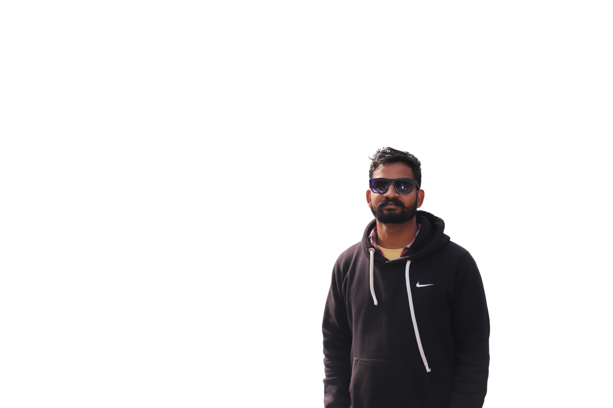
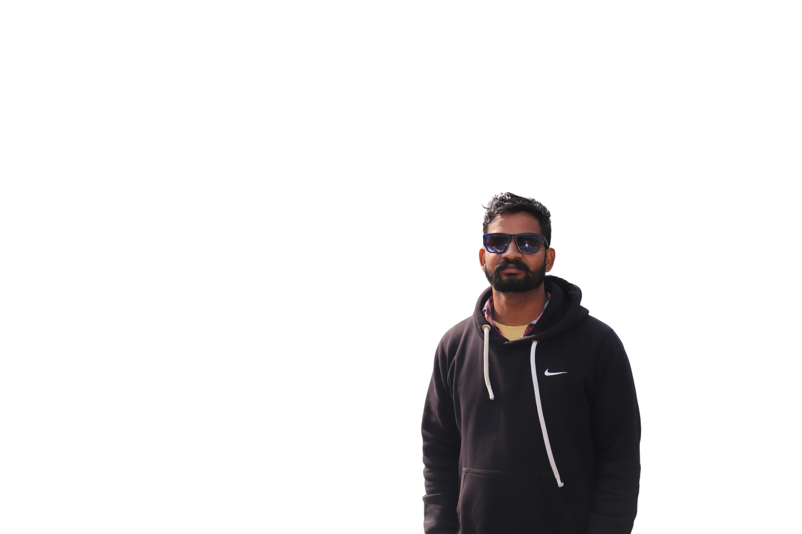

PRADEEP
About
"Hello, I'm Pradeep Tamta, a passionate web developer with over 2+ years of hands-on experience in crafting digital experiences. Beyond my love for coding, I am an avid traveler, finding inspiration in the diverse landscapes and cultures I encounter. As a developer, I thrive on turning ideas into functional and visually appealing websites, while my adventures fuel my creativity and broaden my perspective. Let's build something incredible together, merging the worlds of technology and exploration!"
CHUKA-SPOT
Tanakpur is located on the banks of Sarda River and adjacent to the Nepal border. It is the last plain area on the road to Kumaon zone of Uttarakhand and acts as a junction for the Kumaon District's mountainous part. It is also the first point in the Kailash Manasarovar Pilgrimage.
Tanakpur is famous for the Devi Purnagiri temple which is situated approximately 24 km at the north of city. National Highway 9 which starts from Askot in Pithoragarh district and passes from Tanakpur to cities including Khatima, Rudrapur, Rampur, Moradabad, Garhmukteshwar, Hapur, Ghaziabad, Delhi, Bahadurgarh, Rohtak, Hisar, Sirsa, Fatehabad and the highway ends at the state of Punjab.
BOOM-RANGE
This area was completely covered with forests till the first half of the nineteenth century. Tanakpur was a small village adjacent to the border of Nepal. At a distance of three miles from here was Brahmadev Mandi, which was settled by Katyuri kings . Later, due to landslide, the market was completely buried and after some time, a trading town started developing here again.
In 1890, when an English tourist Talak along with his friend Manjar Hussey came to this place, impressed by the natural beauty of this place, Talak and Hussey first settled in Bagdora (Sailani Goth) and another Englishman Metsin settled near the old tank. Built bungalows for. After this, efforts were made to settle this city in a planned manner.
DEORIA TAL
Deoria Tal (also Devaria or Deoriya) is a lake about 3 km (1.9 mi) from the villages of Mastura and Sari on the Ukhimath-Chopta road in the state of Uttarakhand in India. Situated at an altitude of 2,438 metres (7,999 ft) in the Garhwal Himalayas, it has heavily wooded, lush green surroundings with snow-covered mountains (Chaukhamba being one of them) in the backdrop. It is sacred to the vast population of India, such as the Hindus, Jains, Buddhists and Sikhs and other sects.
Alternately, one can trek 7 km (4.3 mi) to Deoria Tal from Ukhimath. Even though, trekkers are no longer allowed to camp at the famous Deoriatal , there are options of jungle trekking, videography, etc. There are a couple of shops that sell tea and snacks, but these close at sundown. Trekkers usually combine this trek with the nearby trek to Tungnath (the highest Hindu shrine devoted to Lord Shiva) and Chandrashila, which are approached from Chopta.